地政学
ポドゴリツァはアドリア海、バルカン内陸、EU加盟交渉を結ぶ首都です。小国モンテネグロの外交、NATO加盟後の安全保障、セルビアとの関係、観光国家の政策が官庁街へ集まります。川沿いに国家の進路がさらに見えます。
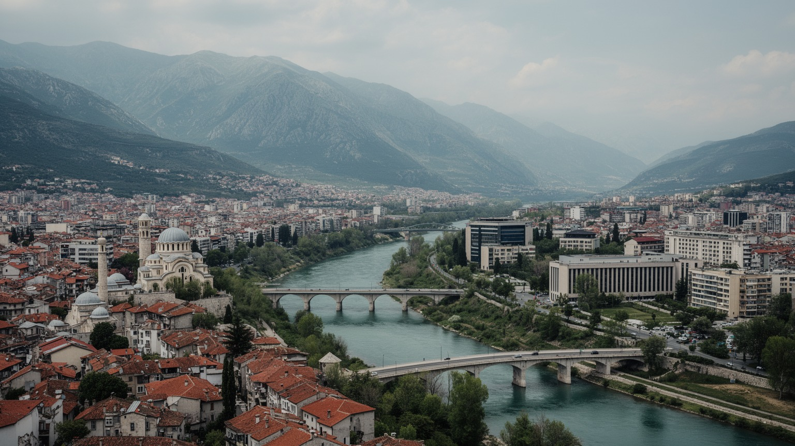
🇲🇪 モンテネグロ / 首都ポドゴリツァ / World City Atlas
モラチャ川とリブニツァ川の合流部に広がる、モンテネグロ最大の都市です。行政、商業、大学、交通、宗教、旧市街と新しい住宅地が、アドリア海と山岳内陸を結ぶ盆地に集まります。
都市の骨格
ポドゴリツァは、アドリア海岸、スカダル湖、北部山岳地帯、セルビア方面を結ぶ低地の結節点です。小国の政治と商業、旧ユーゴスラビアの記憶、EU加盟交渉、川辺の暮らしが重なります。
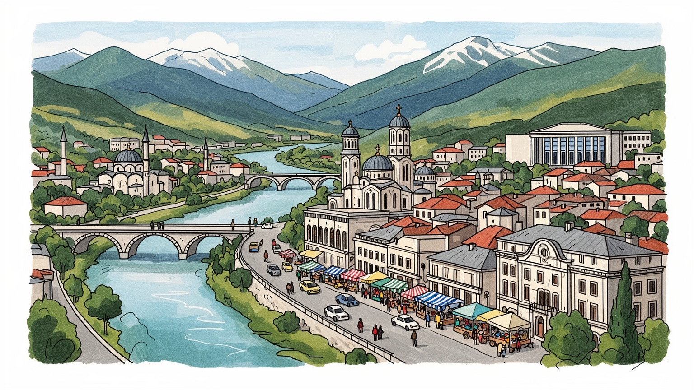
ポドゴリツァはアドリア海、バルカン内陸、EU加盟交渉を結ぶ首都です。小国モンテネグロの外交、NATO加盟後の安全保障、セルビアとの関係、観光国家の政策が官庁街へ集まります。川沿いに国家の進路がさらに見えます。
行政、商業、金融、通信、大学、建設、物流、サービス業が雇用の中心です。沿岸観光の収入と内陸の生活を結ぶ一方、若者の就職、住宅費、季節労働、移住、賃金格差が家計の選択を左右します。職の幅も問われます。
正教会、イスラム、カトリック、モンテネグロ語とセルビア語の近さ、オスマン期の旧市街、社会主義期の都市計画が重なります。聖堂、古いモスク、カフェ、大学、家族行事が首都の日常を作ります。祈りも街に残ります。
住民は暑い夏、車中心の通勤、川辺の散歩、住宅開発、大学生活、市場、郊外の農地を使い分けます。旅人は旧市街、ミレニアム橋、復活大聖堂、スカダル湖、チジェヴナ渓谷、山岳方面へ足を伸ばします。身近な首都です。
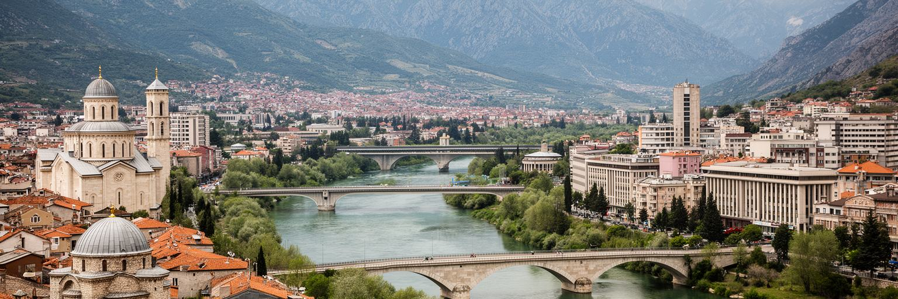
ポドゴリツァを理解する入口は、海岸の観光都市ではなく、内陸の低地に置かれた首都であることです。モラチャ川とリブニツァ川が市街地を刻み、南にはスカダル湖、西と北には山地、南西にはアドリア海岸への道が広がります。都市は谷底の平地、橋、幹線道路、官庁、集合住宅、大学、ショッピング施設を組み合わせて成長してきました。旧市街の狭い道と社会主義期の広い街路、新しい住宅開発が近い距離で並ぶため、歩くたびに時代の層が変わります。盆地の暑い夏は街路樹、日陰、川辺の風を重要にし、雨の季節には排水と道路管理が生活を左右します。面積の大きい行政区域には郊外の農地や丘陵も含まれ、首都でありながら都市と田園の距離が短いです。ポドゴリツァの都市性は、壮大な高層景観よりも、川と道路が国の各地域を集める実務的な結節点にあります。小さな国では、首都の交通、学校、病院、行政窓口の使いやすさが全国の暮らしへ直結します。川沿いの公共空間が整えば、都市の暑さを和らげるだけでなく、住民が自分の首都を歩いて確かめる場所にもなります。盆地の首都は、地形そのものが政治と日常の舞台です。この地形を意識すると、首都の成長は単なる市街地拡大ではなく、川、橋、暑さ、郊外集落をどう一体で扱うかという課題として見えてきます。中心部の一つの整備も、盆地全体の移動と安心に響きます。
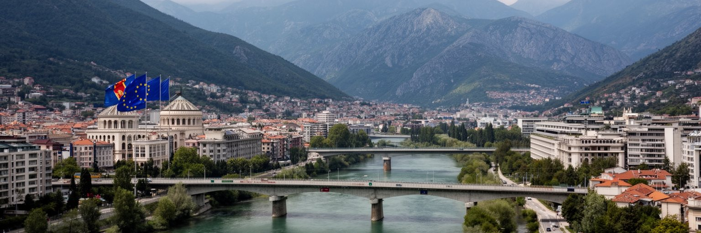
ポドゴリツァは、2006年に独立したモンテネグロの政治的な中心です。大統領府、政府機関、議会、裁判所、各国大使館、国際機関の事務所が集まり、小国の政策判断がここから海岸都市、北部山岳地域、少数民族地域へ広がります。NATO加盟後の安全保障、EU加盟交渉、司法改革、汚職対策、財政管理、環境基準、国境管理は、抽象的な外交用語ではなく、首都の行政手続きと市民サービスの質に関わります。セルビアとの歴史的、宗教的、言語的な近さは政治の議論を複雑にし、独立国家としての制度づくりを常に問い直します。選挙や連立交渉の変化は、公共企業、警察、学校、都市開発、雇用の期待にも影響します。小さな首都では政治家、官僚、記者、市民活動家、学生の距離が近く、政策への不満や期待がカフェや大学の会話に早く現れます。EU加盟をめざす都市として重要なのは、欧州の旗を掲げることだけではありません。行政の透明性、都市交通、廃棄物、水道、司法の信頼、少数者の権利が日常で改善されるかが問われます。ポドゴリツァの政治性は、大きな広場の儀式よりも、窓口が公平に動き、若者が将来を国内で考えられるかに表れます。国際基準に合わせる過程で、住民が感じる変化は小さな手続きや道路補修にも現れ、改革の実感は日々の暮らしで試されます。首都の制度が信頼されるほど、地方から来る人にも国家が近くなります。
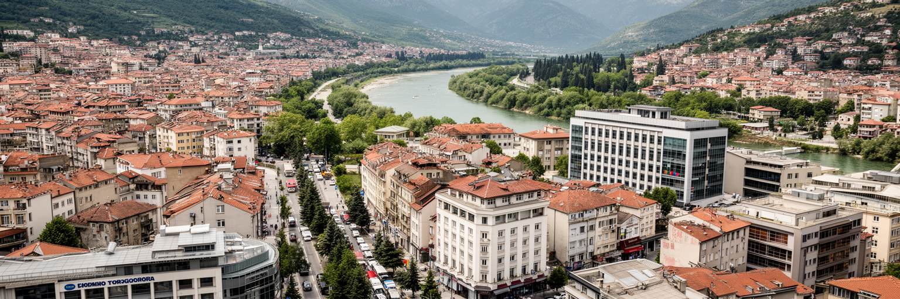
ポドゴリツァの経済は、行政だけで成り立っているわけではありません。銀行、通信、保険、小売、建設、不動産、大学、医療、飲食、物流、空港関連の仕事が集まり、国内の商業と雇用の大きな受け皿になっています。モンテネグロ経済では沿岸観光の存在感が大きいですが、首都はその収入、投資、税務、労働移動、消費を処理する場所でもあります。夏の観光シーズンに海岸で働く人、内陸から首都へ通う人、大学で学びながらサービス業に入る若者、公共部門をめざす人が交差します。平均所得やGDPの数字は上がっても、家賃、輸入品、燃料、教育費、住宅ローンは家計を圧迫します。青果市場や路上の小商い、修理店、配達の仕事は、公式なオフィス経済の外で家計を支えます。一方で、EU市場への接近、デジタルサービス、観光関連の専門職、再生可能エネルギー、地域物流には新しい機会があります。商業施設の明るさだけを見れば成長都市に見えますが、安定した雇用、技能訓練、女性の就労、若者の起業支援がなければ、都市の活力は長続きしません。ポドゴリツァの労働市場は、小国経済が観光依存からどれだけ多様な仕事を作れるかを映す鏡です。雇用の質を上げることが、首都への信頼を支えます。観光地へ人材が流れる季節にも、首都には通年の仕事を作る役割が残り、教育と産業を結ぶ仕組みが問われます。安定した職場が増えれば、若者が国内で将来を描きやすくなります。
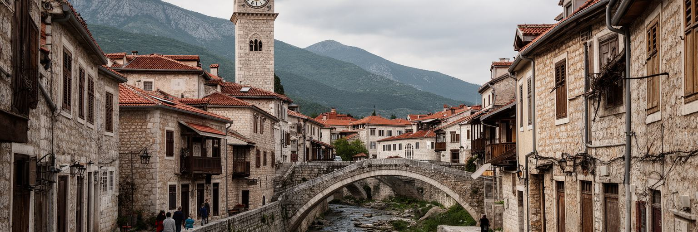
ポドゴリツァの旧市街スタラ・ヴァロシュは、今日の首都の中でオスマン期の記憶を伝える重要な地区です。時計塔、石橋、モスク、低い家並み、曲がった路地は、新しい官庁街や集合住宅とは違う時間を保っています。第二次世界大戦の爆撃で都市は大きな破壊を受け、戦後はティトーグラードとして社会主義的な再建と拡張を経験しました。そのため、ポドゴリツァの歴史景観は一つの古都のように連続しているのではなく、残った旧市街、再建された街路、近年の商業開発が断片的に重なっています。この断片性は弱点だけではありません。破壊、改名、独立、再改名を通じて、都市がどのように記憶を選び直してきたかを見せています。旧市街の保存では、建物を観光用の背景にするだけでなく、住民の暮らし、商店、祈りの場所、歩行者の安全を守る必要があります。歴史を語る看板や小さな博物館、川沿いの散策路が整えば、短い滞在でも都市の層を読みやすくなります。ポドゴリツァは豪華な旧市街を誇る都市ではありませんが、失われたものと残ったものの差が、バルカンの近現代史を静かに示します。新しい首都の足元に古い街路が残ることで、国家の若さと土地の記憶が同時に見えます。保存と再開発の釣り合いを取ることは、観光のためだけではなく、住民が歴史のある場所で暮らし続ける条件でもあります。古い路地が使われ続けてこそ、記憶は都市の現在に残ります。
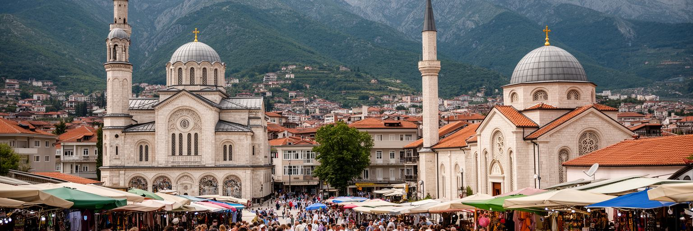
ポドゴリツァの宗教と文化は、正教会を中心にしながら、イスラム、カトリック、アルバニア系、ボシュニャク、ロマ、旧ユーゴスラビアの都市文化が重なります。復活大聖堂は新しい国家時代の象徴的な建築として強い存在感を持ち、旧市街のモスクやカトリック教会は、別の歴史層を語ります。モンテネグロ語、セルビア語、アルバニア語、ボスニア語の関係は近く、言葉は単なる会話手段であると同時に、帰属意識や政治的な立場にも関わります。宗教施設は礼拝だけでなく、家族行事、葬儀、祝祭、慈善、教育を通じて生活の暦を作ります。都市のカフェ文化、音楽、バスケットボールやサッカー、大学生活は、若い世代が古い境界を越えて出会う場にもなりますが、政治や歴史認識の違いが社会を分けることもあります。多文化性は自然に調和するものではなく、学校、公共空間、雇用、行政サービスの中で丁寧に扱われる必要があります。観光客が聖堂や旧市街を見る時には、建物の美しさだけでなく、誰の記憶がどの場所で可視化され、誰の声が見えにくいのかを考えると、首都の複雑さが分かります。ポドゴリツァの文化は、境界の近さを日常の礼儀と会話で調整する力に支えられています。信仰の違いを都市の緊張だけとして見るのではなく、隣人関係や市場の取引、学校生活の中で共存を学ぶ力として読むことが大切です。祝祭や日々の挨拶は、政治の言葉より柔らかく街を結びます。
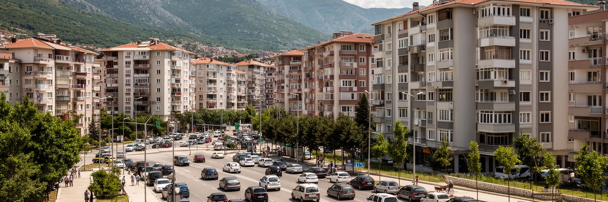
ポドゴリツァの日常は、川辺の散歩やカフェの穏やかさと、車中心の移動、暑い夏、住宅開発の速さを併せ持ちます。独立後の投資と人口集中によって、集合住宅、商業施設、郊外の戸建て、幹線道路沿いの開発が広がりました。市域が大きく、行政区域には農村部も含まれるため、中心部だけでは都市の暮らしを説明できません。通勤や通学では自家用車への依存が強く、駐車、渋滞、歩道の途切れ、自転車の安全、バスの利便性が論点になります。夏の高温は停留所の日陰、街路樹、公園、水辺の公共空間を重要にし、夕方には広場やカフェに家族連れと高齢者が戻ります。住宅価格や家賃が上がれば、若い世帯や学生は中心部から離れ、時間と交通費を負担します。社会主義期の集合住宅は立地の良さを持つ一方、改修、断熱、エレベーター、公共空間の管理が必要です。新しい開発が進む時には、学校、保育、診療所、緑地、排水を同時に整えなければ、見た目の成長が生活の不便に変わります。ポドゴリツァの住みやすさは、建物の新しさではなく、暑い日にも歩ける道、子どもや高齢者が使える交通、川辺と住宅地を結ぶ公共空間に表れます。首都の成熟は移動の公平さで測られます。公共交通や歩道が改善されれば、中心部の渋滞を和らげ、学生や高齢者にも首都の機能へ近づく道を開けます。住まいと移動を一緒に考えることが、暑い盆地の生活を楽にします。
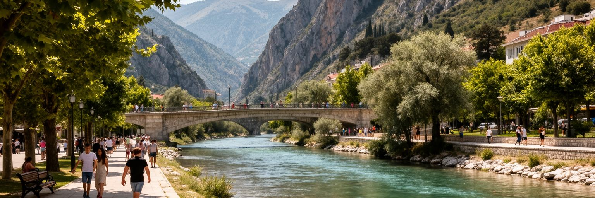
モラチャ川とリブニツァ川は、ポドゴリツァの地図を分ける線であると同時に、都市をつなぎ直す公共空間です。ミレニアム橋のような現代的な橋は新しい首都のイメージを作り、古い石橋は旧市街の記憶を伝えます。川の水面、崖、緑地、遊歩道は、暑い夏に街を冷やす貴重な要素であり、散歩、ジョギング、写真、待ち合わせ、休憩の場所になります。ただし川辺の価値は景観だけではありません。水質、洪水対策、ゴミの管理、建設規制、夜間の安全、障害のある人のアクセスが整って初めて、誰にとっても使える場所になります。川沿いの開発が進むと、眺望を持つ住宅や商業施設の利益と、公共の通行権や自然環境の保全が衝突します。小さな首都では、一つの橋や公園が生活動線を大きく変えます。川を背中にした都市から、川へ開く都市へ変わることは、ポドゴリツァの生活品質を上げる重要な論点です。川辺が歩きやすくなれば、車に頼らない移動が増え、旧市街、大学、官庁街、住宅地をゆるやかにつなげます。水辺は観光客のための撮影場所である前に、住民が日々の暑さと忙しさから少し離れる場所です。ポドゴリツァの未来は、川を都市の裏側ではなく共有財産として扱えるかにかかっています。橋の上から見える水面は、都市の象徴であるだけでなく、環境管理、余暇、移動を一つに結ぶ日常のインフラです。川を守る姿勢は、首都の公共性を測る分かりやすい尺度になります。
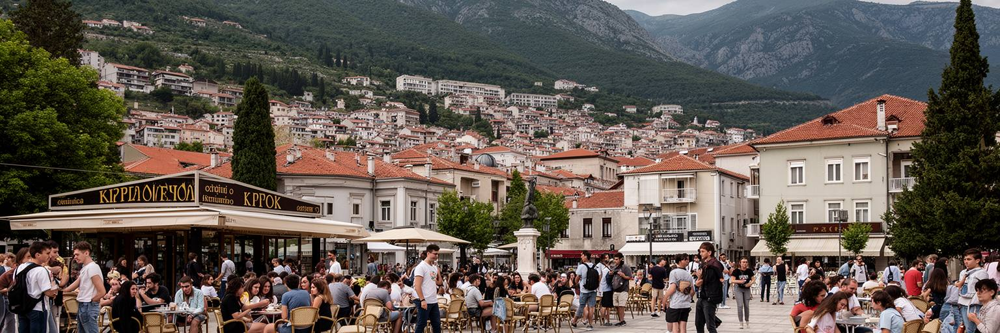
ポドゴリツァは、モンテネグロの若者が教育、仕事、文化、政治情報へ近づく場所です。大学、専門学校、図書館、スポーツ施設、カフェ、IT企業、行政機関が集まり、地方や海岸部から移ってくる学生も多くいます。首都で学ぶことは、就職の機会を広げる一方、家賃、生活費、交通費、奨学金、家族からの仕送りに左右されます。若い世代はEU加盟、移動の自由、外国語、デジタル技能、観光以外の仕事に期待を持ちますが、国内市場の小ささは将来設計を難しくします。海外留学や移住は選択肢であり、同時に人材流出への不安でもあります。大学と都市が結びつけば、研究、起業、音楽イベント、ラジオやSNSでの発信、環境活動、公共政策への参加が広がります。女性や少数派の若者が安全に学び、働き、発言できるかも、首都の開かれ方を測る重要な指標です。若者の不満は、雇用だけでなく、政治への信頼、住宅、公共交通、文化施設、自由に集まれる広場にも関わります。ポドゴリツァが若い国家の首都であるなら、若者を単なる労働力や有権者としてではなく、都市を作る主体として扱う必要があります。学生の声が行政や地域活動に届く時、首都は将来への通路になります。小さな都市だからこそ、変化の手応えも近く感じられます。若い世代が戻りたいと思える都市にするには、文化の場、透明な採用、手ごろな住まい、挑戦しやすい仕事がそろう必要があります。
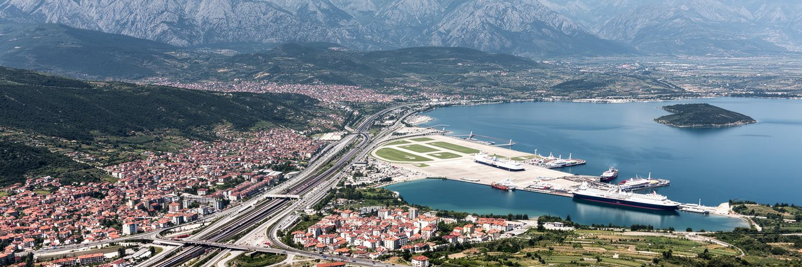
ポドゴリツァは、モンテネグロの移動をまとめる結節点です。空港は首都を欧州各地へつなぎ、鉄道と道路はバール港、スカダル湖、ニクシッチ、北部山岳地帯、セルビア方面へ伸びます。海岸の観光地へ向かう旅行者にとっては通過点に見えることもありますが、国内の物流、行政出張、学生の移動、医療アクセス、親族訪問では首都の交通が大きな役割を持ちます。山が多い国では、道路の状態、冬季管理、トンネル、橋、燃料価格が地域間の距離を決めます。バール港と内陸を結ぶ鉄道は、貨物だけでなく国家の空間を結び付ける象徴でもあります。空港の便数や運賃は観光、ビジネス、留学、移住に影響し、入国時の印象は国全体への信頼を左右します。一方で、市内交通は自家用車に偏りやすく、バスや徒歩、自転車の利便性を上げる余地があります。交通回廊としてのポドゴリツァを読むと、首都の重要性は建物の数ではなく、国の各地域をどれだけ公平に結び、移動の負担を減らせるかにあると分かります。海岸と山岳、国内と国外、観光と日常を接続する力が、この都市の実務的な世界性です。交通の改善は経済成長だけでなく、地方に暮らす人の教育や医療の選択肢を広げます。そのため、幹線道路や空港だけでなく、市内の乗り換え、駅周辺、歩道、案内表示まで含めた移動体験が重要になります。移動のしやすさは、観光客だけでなく地方から来る住民の安心も支えます。
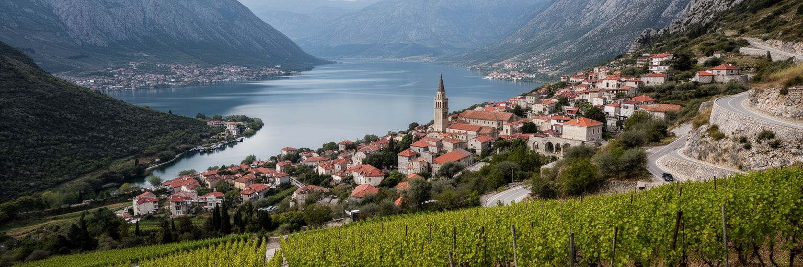
ポドゴリツァの観光は、市内だけで完結するよりも、近郊の自然と組み合わせることで魅力が見えます。旧市街、時計塔、復活大聖堂、ミレニアム橋、川辺の散策を歩いた後、スカダル湖、チジェヴナ川の渓谷、ワイン産地、山岳道路、修道院、アドリア海岸へ短時間で向かえます。首都は海辺リゾートの華やかさを持ちませんが、モンテネグロの多様な地形へ入る玄関です。観光客にとって便利な一方、短い滞在では都市そのものが素通りされやすい論点もあります。博物館、案内表示、公共交通、歩行者空間、夜の安全、川辺の整備、地元飲食店への導線が充実すれば、首都で過ごす時間は増えます。市場で果物やチーズを買い、チェヴァピや川魚を食べる時間は、名所巡りとは別の記憶になります。自然を近さだけで消費すれば、車の混雑、ゴミ、水質、私有地との摩擦が起きます。ポドゴリツァを拠点にした旅の価値は、山、湖、川、旧市街、現代の首都機能を一日の中で結び、モンテネグロが小さくても非常に多層な国であることを実感できる点にあります。派手な名所よりも、移動の短さと風景の変化が旅を豊かにします。首都を歩く時間も、その旅の大切な一部です。首都を拠点にすることで、海岸だけでは見えにくい内陸の文化や農村の暮らしにも触れられ、旅の視野が広がります。移動距離の短さは、観光と地域理解を結びつける大きな強みです。
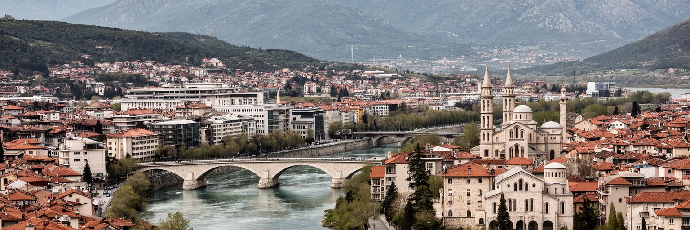
ポドゴリツァは、世界的な大都市の規模や観光都市の知名度では測りにくい首都です。それでも、バルカンの地政学、独立国家の制度づくり、EU加盟への期待、宗教と民族の近さ、社会主義期の都市計画、旧市街の記憶、川辺の公共空間、若者の進路、観光依存からの経済多様化が、比較的コンパクトな市街地に重なっています。海岸のブドヴァやコトルに比べると控えめに見えますが、国の政治、教育、商業、交通、行政サービスはここに集まります。都市の重要性は、訪問者を驚かせる景観の強さだけではなく、国民が手続きをし、学び、働き、移動し、将来を考える場所であることにあります。ポドゴリツァを読むと、小国の首都が抱える利点と難しさが見えます。意思決定の距離は近いですが、雇用の選択肢は限られ、都市開発の一つひとつが生活にすぐ影響します。川と橋、聖堂とモスク、官庁とカフェ、集合住宅と郊外の農地を同時に見ることで、モンテネグロの複雑さが立体的になります。ポドゴリツァは派手な結論を急がない都市です。だからこそ、歩きながら国の進路、歴史の傷、日常の希望を重ねて読む価値があります。小さな首都の変化は、バルカン全体の変化を静かに映しています。規模の小ささは弱点ではなく、政策、暮らし、記憶の変化が見えやすい条件でもあり、都市を丁寧に観察する価値を高めます。静かな首都の変化を追うことは、国の方向を読むことでもあります。